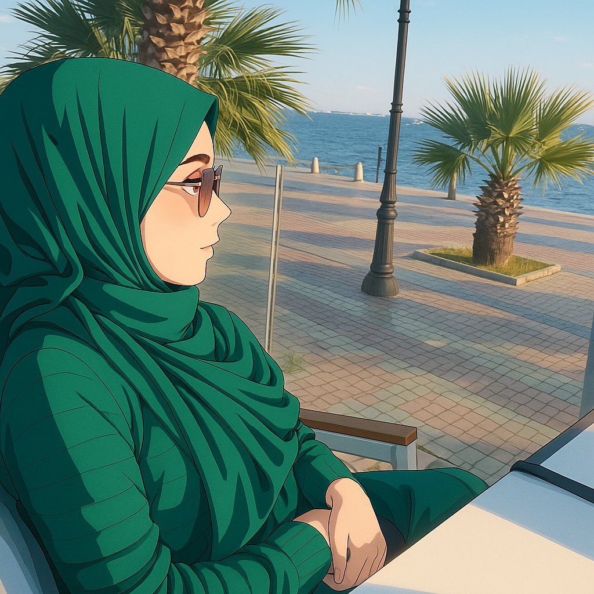

|  |
MON PARCOUR ?Du travail minutieux en laboratoire, à la relation client en magasin, puis un déclic : créer, coder, construire. |
AUJOURDHUI ?Je suis en formation à L'École de la Plateforme, avec déjà dans ma boîte à outils : HTML, CSS, SCSS, JavaScript Responsive Design Figma, VS Code Organisation, rigueur et persévérance |
MON OBJECTIF ?Intégrer une équipe tech où je pourrai : ✅ Évoluer comme développeuse front-end ✅ Contribuer à des projets concrets ✅ Apprendre tous les jours, avec le sourire |
DEMAIN ?Pourquoi pas aller plus loin; frameworks, backend, voire lA. Parce que quand on aime apprendre on ne s'arrête jamais. |
Et si non ?Je crois au travail bien fait, au code propre, et à la puissance du collectif. Café, code, curiosité. Toujours motivée, toujours connectée. |